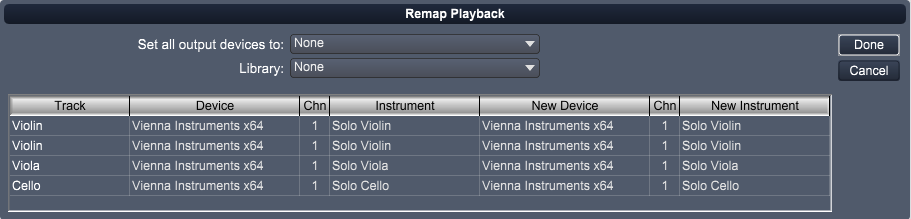
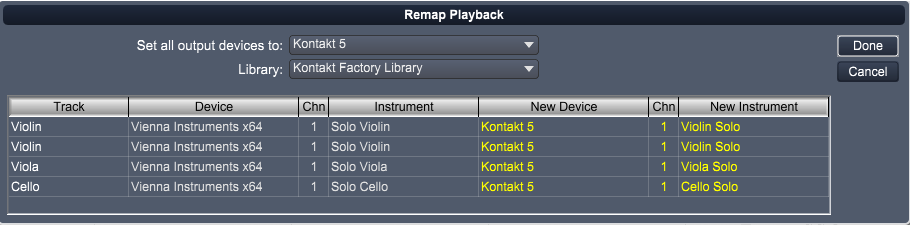

Choose this command to open the Tracks Playback dialog. The Tracks Playback dialog displays a list of all tracks in your score with their current playback information.
Here is a quick place to set the playback device, channel, instrument, etc., for multiple tracks in your score. These same settings are shown the current track in the Track Inspector Panel.

Click on the New Device field for any track to change it's output device.
Click on the channel to change the track's playback MIDI channel.
Click on the New Instrument to change the library and instrument for the New Device.
You can choose the Set all output devices to and Library options to quickly set the same output device and library for all tracks.
Overture will try to remap the actual instruments to equivalents in the new library. If an equivalent instrument is found it will be shown in yellow. If not, you'll need to to do it manually by clicking on the instrument.
An example showing new changes is shown below.

Click on the Done button to apply the changes. Note: This may take a while if you're remapping to a sample library, depending on the samples that need to be loaded.
At this time the only libraries that Overture can automatically load instruments, are Garritan Personal Orchestra libraries, the Kontakt Factory Library, and the Vienna Special Edition Library.
We'll be adding more in future updates.
For libraries that Overture does not automatically load, you'll need to open each track's plugin and load the individual instrument. This can easily be done by right clicking on a track and choose Show Track's Instrument.